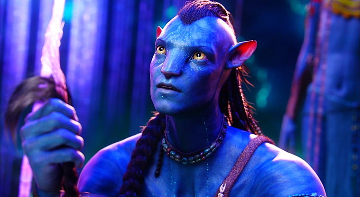
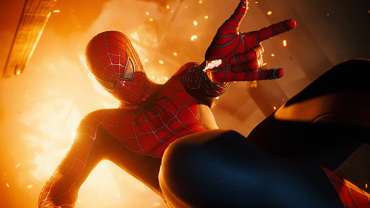

One of the reasons Jurassic Park is considered a great movie is its ability to seamlessly blend science fiction with adventure.
The film explores the ethical implications of resurrecting dinosaurs through genetic engineering, highlighting the dangers of tampering with nature.
It raises thought-provoking questions about humanity's responsibility and the consequences of playing god.
This underlying theme adds depth and complexity to the film, elevating it beyond a mere action-packed spectacle.
However, one of the most remarkable aspects of Jurassic Park is the use of animatronics.
The film's visual effects team, led by Stan Winston, revolutionized the industry by creating incredibly lifelike animatronic dinosaurs.
These animatronics brought the prehistoric creatures to life in a way that had never been seen before on the big screen.
From the majestic Brachiosaurus to the terrifying Tyrannosaurus rex, each dinosaur had its own unique personality and presence, thanks to the intricate animatronic work.
The movie introduced a revolutionary fusion of live-action footage and computer-generated imagery (CGI), seamlessly blending the two to create the mesmerizing world of Pandora. The immersive 3D technology transported viewers into a visually stunning and vibrant environment, making them feel like they were a part of the story. Beyond its technical achievements, Avatar's story is a compelling and timely exploration of themes such as environmentalism, corporate greed, and the clash between cultures. The film follows the journey of Jake Sully, a paralyzed marine who becomes part of the Na'vi, an indigenous humanoid species on Pandora. As Jake immerses himself in their culture and fights against the human exploitation of Pandora's resources, the film delivers a powerful message about the importance of respecting and preserving nature. 
Spider-Man's success is also attributed to its thrilling action sequences and impressive visual effects. The film showcases exhilarating web-slinging stunts, dynamic fight sequences, and acrobatic maneuvers that bring the comic book pages to life. The seamless integration of practical effects, CGI, and wirework adds a sense of realism and excitement to the action, leaving audiences on the edge of their seats. Additionally, Spider-Man embraces themes of responsibility, sacrifice, and the consequences of one's actions. Peter's journey as Spider-Man is not just about saving the day; it's about the choices he makes and the sacrifices he must endure to protect those he loves. This exploration of moral dilemmas and the burdens of heroism adds depth and emotional resonance to the film, making it more than just a typical superhero story. 